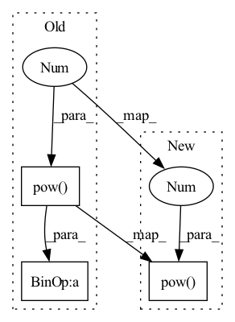

Pattern ID :3177
Before Change
escape_NaN = escape_NaN.to(device)
wi = wi[0] // [L, C, k, k]
max_wi = torch.sqrt(
torch.sum(torch.pow( wi, 2 ) + escape_NaN, dim=[1, 2, 3], keepdim=True))
wi_normed = wi / max_wi
// xi shape: [1, C, H, W], yi shape: [1, L, H, W]After Change
"""
// conv for compare
wi = wi[0] // [L, C, k, k]
max_wi = torch.sqrt(torch.sum(torch.pow( wi, 2 ) , dim=[1, 2, 3], keepdim=True)).clamp_min(1e-4)
wi_normed = wi / max_wi
// xi shape: [1, C, H, W], yi shape: [1, L, H, W]
xi = same_padding(xi, [self.ksize, self.ksize], [1, 1], [1, 1]) // xi: 1*c*H*WIn pattern: SUPERPATTERN
Frequency: 4
Non-data size: 3
Instances Fragment ID: 10215966
Project Name: nipponjo/deepfillv2-pytorch
Commit Name: b56ad8569aeea17343cedc9c7331223e134c228f
Time: 2021-12-02
Author: 28433296+nipponjo@users.noreply.github.com
File Name: model/networks_tf.py
M Class Name: ContextualAttention
N Class Name: ContextualAttention
M Method Name: forward(4)
N Method Name: forward(4)
M Parent Class: nn.Module
N Parent Class: nn.Module
M File Name: model/networks_tf.py
N File Name: model/networks_tf.py
M Start Line: 309
M End Line: 467
N Start Line: 338
N End Line: 464
Before Change
z_flattened = z.view(-1, self.codebook_dim)
// distances from z to embeddings e_j (z - e)^2 = z^2 + e^2 - 2 e * z
d = torch.sum(z_flattened.pow(2), dim=1, keepdim=True) + \
torch.sum(self.embedding.weight.pow(2), dim=1) - 2 * \
torch.einsum("bd,dn->bn", z_flattened, self.embedding.weight.permute(1,0)) // "n d -> d n"
encoding_indices = torch.argmin(d, dim=1)After Change
z = rearrange(z, "b c h w -> b h w c").contiguous()
z_flattened = z.reshape(-1, self.codebook_dim)
d = (
z_flattened.pow(2 ) .sum(1, keepdim=True)
- 2 * z_flattened @ self.embedding.weight
+ self.embedding.weight.pow(2).sum(0, keepdim=True)
) Fragment ID: 10215971
Project Name: tgisaturday/dalle-lightning
Commit Name: e387b61c8c640b56c7cbd241d8ec60ab1f022611
Time: 2021-08-12
Author: jamesk1228@gmail.com
File Name: pl_dalle/modules/vqvae/quantize.py
M Class Name: EMAVectorQuantizer
N Class Name: EMAVectorQuantizer
M Method Name: forward(2)
N Method Name: forward(2)
M Parent Class: nn.Module
N Parent Class: nn.Module
M File Name: pl_dalle/modules/vqvae/quantize.py
N File Name: pl_dalle/modules/vqvae/quantize.py
M Start Line: 85
M End Line: 118
N Start Line: 184
N End Line: 215
Before Change
z = z.permute(0, 2, 3, 1).contiguous()
z_flattened = z.reshape(-1, self.codebook_dim)
d = (
z_flattened.pow(2 ) .sum(1, keepdim=True)
- 2 * z_flattened @ self.embedding.weight
+ self.embedding.weight.pow(2).sum(0, keepdim=True)
)
_, encoding_indices = (-d) .max(1)
encodings = F.one_hot(encoding_indices, self.num_tokens).type(z_flattened.dtype)
encoding_indices = encoding_indices.view(*z.shape[:-1])
z_q = self.embedding(encoding_indices)After Change
z_flattened = z.view(-1, self.codebook_dim)
// distances from z to embeddings e_j (z - e)^2 = z^2 + e^2 - 2 e * z
d = torch.sum(z_flattened.pow(2 ) , dim=1, keepdim=True) + \
torch.sum(self.embedding.weight.pow(2), dim=1) - 2 * \
torch.einsum("bd,dn->bn", z_flattened, self.embedding.weight.permute(1,0)) // "n d -> d n"
Fragment ID: 10215975
Project Name: tgisaturday/dalle-lightning
Commit Name: f5fd383f3ac54b79f33c1ab36ae01f46ea06c6c7
Time: 2021-08-04
Author: jamesk1228@gmail.com
File Name: pl_dalle/modules/vqvae/quantize.py
M Class Name: EMAVectorQuantizer
N Class Name: EMAVectorQuantizer
M Method Name: forward(2)
N Method Name: forward(2)
M Parent Class: nn.Module
N Parent Class: nn.Module
M File Name: pl_dalle/modules/vqvae/quantize.py
N File Name: pl_dalle/modules/vqvae/quantize.py
M Start Line: 68
M End Line: 99
N Start Line: 131
N End Line: 164
Before Change
wi = wi[0] // [L, C, k, k]
//max_wi = torch.max(torch.sqrt(torch.sum(wi**2, dim=[1, 2, 3], keepdim=True)), escape_NaN)
max_wi = torch.sqrt(torch.sum(torch.pow( wi, 2 ) + escape_NaN, dim=[1, 2, 3], keepdim=True))
wi_normed = wi / max_wi
// xi shape: [1, C, H, W], yi shape: [1, L, H, W]After Change
"""
// conv for compare
wi = wi[0] // [L, C, k, k]
max_wi = torch.sqrt(torch.sum(torch.pow( wi, 2 ) , dim=[1, 2, 3], keepdim=True)).clamp_min(1e-4)
wi_normed = wi / max_wi
// xi shape: [1, C, H, W], yi shape: [1, L, H, W]
yi = F.conv2d(xi, wi_normed, stride=1, padding=(self.ksize-1)//2) // [1, L, H, W] Fragment ID: 10215972
Project Name: nipponjo/deepfillv2-pytorch
Commit Name: b56ad8569aeea17343cedc9c7331223e134c228f
Time: 2021-12-02
Author: 28433296+nipponjo@users.noreply.github.com
File Name: model/networks.py
M Class Name: ContextualAttention
N Class Name: ContextualAttention
M Method Name: forward(4)
N Method Name: forward(4)
M Parent Class: nn.Module
N Parent Class: nn.Module
M File Name: model/networks.py
N File Name: model/networks.py
M Start Line: 333
M End Line: 482
N Start Line: 352
N End Line: 474